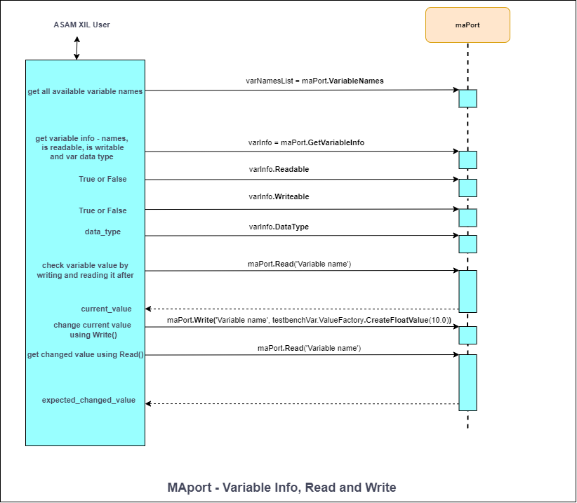
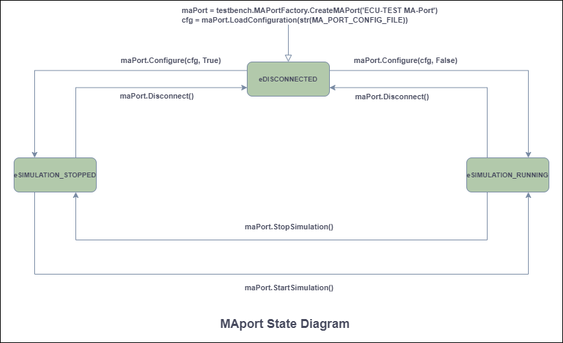
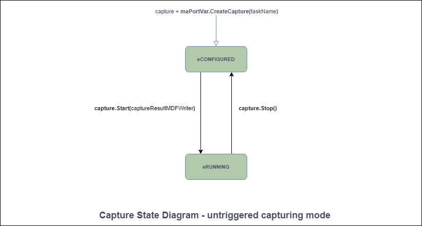
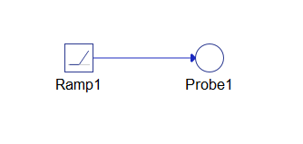

Typhoon HIL XIL API Python Guide
How to start to use ASAM XIL API for creating tests in a Python environment
Importing the XIL API .NET Assemblies
import sys
import clr
import os
import typhoon.api.hil as hil
ASSEMBLY_NAME = 'ASAM.XIL.Implementation.Testbench'
SERVER_CLASS_NAME = 'TyphoonHIL.ASAM.XIL.Server'
# Get TyphoonHIL SW version and system drive label for ASSEMBLY_ROOT path
sw_ver = hil.get_sw_version()
system_drive = os.getenv("SystemDrive")
ASSEMBLY_ROOT = r'{}\ProgramData\ASAM\XIL\Typhoon HIL Control Center {}' \
r'\XILVersion_2.1.0\C#'.format(system_drive, sw_ver)
sys.path.append(str(ASSEMBLY_ROOT))
# Add reference to the XIL API .NET assemblies
clr.AddReference(ASSEMBLY_NAME)
clr.AddReference(SERVER_CLASS_NAME)Creating a Typhoon HIL XIL API Testbench
All XIL API interfaces can be created via factory methods. A factory approach is applied in order to maximize independence of test cases from the test system. The Testbench API separates the test hardware from the test software and allows standardized access to the hardware.
import TyphoonHIL.ASAM.XIL.Server as server
testbench = server.Testbench()
print('Testbench invoked') Creating and Configuring a MA (Model Access) Port
The Testbench API covers access to the Model Access hardware. Model Access provides access to simulation model read and write parameters, capture functionality, and generated signals.
To load and apply the configuration to an MAPort instance, the LoadConfiguration and Configure methods are used.
import os
from pathlib import Path
import typhoon.api.hil as hil
from typhoon.api.schematic_editor import model
FILE_DIR_PATH = Path(__file__).parent
model_name = "test_model.tse"
model_path = os.path.join(FILE_DIR_PATH, "hil_model", model_name)
compiled_model_path = model.get_compiled_model_file(model_path)
model.load(model_path)
model.compile()
hil.load_model(compiled_model_path, vhil_device=vhil_enable)# script directory
TEST_DIR_PATH = Path(__file__).parent
MODEL_FILE_NAME = "test_model.tse"
MODEL_FILE_PATH = os.path.join(TEST_DIR_PATH, "hil_model", MODEL_FILE_NAME)
# Example of XML file
xml_content = f"""<?xml version='1.0'?>
<root>
<schematic_path>{MODEL_FILE_PATH}</schematic_path>
<vhil_device>false</vhil_device>
<debug>true</debug>
</root>"""
XML_FILE_NAME = "ModelInfo_HIL.xml"
MA_PORT_CONFIG = os.path.join(TEST_DIR_PATH, "hil_model", XML_FILE_NAME)
# Invoke Testbench
testbench = server.Testbench()
# Create MA Port
maPort = testbench.MAPortFactory.CreateMAPort('ECU-TEST MA-Port')
# Create configuration file – because we want to use a relative MODEL_FILE_PATH
with open(MA_PORT_CONFIG, 'w') as xml_f:
xml_f.write(xml_content)
# Load configuration
cfg = maPort.LoadConfiguration(str(MA_PORT_CONFIG))
# Apply to the MA Port
maPort.Configure(cfg, False)In order to maximize independence of test cases from test systems it is not sufficient to just standardize interfaces of a test system. Rather there should be a generic way to obtain corresponding instances from any vendor providing an XIL implementation. Therefore, the factory approach is applied. That means instances are obtained from methods of already existing objects.
MA Port - Reading and Writing Variables
The sequence diagram in Figure 1 shows how to handle and access model variables. We assume that the XIL simulator is already initialized, and a simulation model is running. An MAPort instance is used to collect all available model variables and to check their presence in the simulation model. Before accessing a model variable, we can check if a variable's data type and if it is readable or writable through the MAPort instance. The variable can be accessed by the Read() and the Write() method of the MAPort object.

# The model is a SCADA Input connected to a Probe
setVal = 10.0
# Check if variables are readable - return True or False
canRead = maPort.IsReadable('SCADA Input1')
# Check if variables are writable - return True or False
canWrite = maPort.IsWritable('SCADA Input1')
# Get the variable data type
varDataType = maPort.GetDataType('SCADA Input1')
# Write a value to the SCADA input
maPort.Write('SCADA Input1', testbenchVar.ValueFactory.CreateFloatValue(setVal))
# Read a value from the probe
raw_probeExp = maPort.Read('Probe1')
probeExp = raw_probeExp.__raw_implementation__
print(str(probeExp.Value))MA Port - Start / Stop Simulation and Simulation States
# Start simulation – simulation can be started from MAport states:
# eDISCONNECTED or eSIMULATION_STOPPED
maPort.StartSimulation()
# The current MAport state after starting simulation is eSIMULATION_RUNNING
# Run some tests
# .
# .
# .
# Stop simulation – simulation can be stopped from MAport states:
# eSIMULATION_RUNNING
maPort.StopSimulation()
# The current MAport state after stopping simulation is eSIMULATION_STOPPED
# Disconnect from MAPort – simulation will be stopped, if not before
# Can be called from MAport states: eSIMULATION_RUNNING or eSIMULATION_STOPPED
maPort.Disconnect()
# The current MAport state after disconnecting from MAport is eDISCONNECTED
# The MAport State can be checked in the following way
currentState = maPort.State
print(“The current MAport state is: {}”.format(currentState))
maPort.Dispose()
print("MAPort DISPOSED")maPortState = {
# A connection to the port's hardware is established. Model simulation
# is not running (stopped).
0x0000: "eSIMULATION_STOPPED",
# A connection to the port's hardware is established. Model simulation
# is running.
0x0001: "eSIMULATION_RUNNING",
# A connection to the port's hardware is not established.
0x0002: "eDISCONNECTED",
}
# You can check the state of simulation by:
currentState = maPort.State
assert maPortState[currentState] == "eSIMULATION_RUNNING", "The MA Port" \
"state is not in eSIMULATION_RUNNING state."The MAport state diagram is shown in Figure 2. Here you can see which methods can be called from which states.

If you want to check which variables are in the model, you can use the VariableNames property:
# Get all variable names from the list of variable names
raw_varNamesList = maPort.VariableNames
varNamesList = raw_varNamesList.__raw_implementation__
# List of all Variable Names from the model
for variable in varNamesList:
print(str(variable))Or list of all task names using TaskNames property:
# Get all task names from the list of task names
raw_taskNames = maPort.TaskNames
taskNames = raw_taskNames.__raw_implementation__
# List of all Task Names from available list of supported tasks
for task in taskNames:
print(str(task))Capture - Create, Start, Stop Capture, and Capture States
The process of acquiring data in a continuous data stream is called CAPTURING. It guarantees that all process data can be retrieved as they occur related to the real-time service in respect to the capture service task. After completion of this process or even while it is still in progress, the data acquired can be retrieved.
The classes responsible for controlling Capture execution, as well as obtaining and displaying measured data, are accessible in the Common.Capturing package. These classes are used by MAPort instances.
The Capture class is the main class of the Capturing package. It is used to define control capture execution.
When capturing a Probe signal, signal streaming must be set. Enabling the Signal Streaming property allows acquisition and logging of the signal. An instance of the Capture class represents a capture definition. A capture is created by the port for which a capture shall be defined (MAPort in our case).
# Create and initialize a Capture object
taskName = "Capturing_Probe"
capture = maPort.CreateCapture(taskName)
# Get the current Capture State (should be "eCONFIGURED")
currentCaptureState = capture.State
# Set variables for capture
probeOutputLst = ["Probe1", "Subsystem1.Probe1"]
capture.Variables = Array[str](probeOutputLst)
# Create a CaptureResultMDFWriter object
captureResultMDFWriter =
testbenchVar.CapturingFactory.CreateCaptureResultMDFWriterByFileName(file_path)
# Capturing process – START capturing
capture.Start(captureResultMDFWriter)
# Get the current Capture State (should be "eRUNNING")
currentCaptureState = capture.State
# Capturing process – Stop must be called to explicitly stop the capture process
capture.Stop()Capture objects have a state representing the status of data acquisition. It can be retrieved via the Capture's state property.
file_path – path to the MDF file.
The State diagram for an untriggered capturing mode is shown in Figure 3.

Signal Segments - Creating Stimulus Signals
# Create Const segment
raw_constSegment = testbench.SignalFactory.CreateConstSegment()
constSegment = raw_constSegment.__raw_implementation__
# Set Const segment properties
constSegment.Duration = testbench.SymbolFactory.CreateConstSymbolByValue(3.4)
constSegment.Value = testbench.SymbolFactory.CreateConstSymbolByValue(5)
# Get the Segment Type (Should be “eCONST”)
segmentTyp = constSegment.Type
# Get the Duration value
print("Duration of segment is: " + str(constSegment.Duration.Value))
# Get the Segment Value
raw_const_segment_value = constSegment.Value
const_segment_value = raw_const_segment_value.__raw_implementation__
print("Value of Const segment is: " + str(const_segment_value.Value))
# Create Exponential segment
expSegment = testbenchVar.SignalFactory.CreateExpSegment()
# Set Exponential segment properties
expSegment.Duration = testbenchVar.SymbolFactory.CreateConstSymbolByValue(5)
expSegment.Start = testbenchVar.SymbolFactory.CreateConstSymbolByValue(1)
expSegment.Stop = testbenchVar.SymbolFactory.CreateConstSymbolByValue(4)
expSegment.Tau = testbenchVar.SymbolFactory.CreateConstSymbolByValue(0.63)
# Get the Segment Type (Should be “eEXP”)
segmentTyp = expSegment.Type
# Get the Duration value
print("Duration of Exp segment is: " + str(exp_segment.Duration.Value))
# Get the Start value
raw_exp_segment_start = expSegment.Start
exp_segment_start = raw_exp_segment_start.__raw_implementation__
print("Start value of Exp segment is: " + str(exp_segment_start.Value)
# Get the Stop value
raw_exp_segment_stop = expSegment.Stop
exp_segment_stop = raw_exp_segment_stop.__raw_implementation__
print("Stop after: " + str(exp_segment_stop.Value))
# Get the Tau value
raw_exp_segment_tau = expSegment.Tau
exp_segment_tau = raw_exp_segment_tau.__raw_implementation__
print("Value of Tau is: " + str(exp_segment_tau.Value))
# Create Ramp segment
rampSegment = testbenchVar.SignalFactory.CreateRampSegment()
# Set Ramp segment properties
rampSegment.Duration = testbenchVar.SymbolFactory.CreateConstSymbolByValue(5)
rampSegment.Start = testbenchVar.SymbolFactory.CreateConstSymbolByValue(1)
rampSegment.Stop = testbenchVar.SymbolFactory.CreateConstSymbolByValue(6)
# Get the Segment Type (Should be “eRAMP”)
segmentTyp = rampSegment.Type
# Get the Duration value
print("Duration of Ramp segment is: " + str(ramp_segment.Duration.Value))
# Get the Start value
raw_ramp_segment_start = rampSegment.Start
ramp_segment_start = raw_ramp_segment_start.__raw_implementation__
print("Start value of Ramp segment is: " + str(ramp_segment_start.Value))
# Get the Stop value
raw_ramp_segment_stop = rampSegment.Stop
ramp_segment_stop = raw_ramp_segment_stop.__raw_implementation__
print("Value of Ramp segment is: " + str(ramp_segment_stop.Value))
# Create RampSlope segment
rampSlopeSegment = testbenchVar.SignalFactory.CreateRampSlopeSegment()
# Set RampSlope segment properties
rampSlopeSegment.Duration = testbenchVar.SymbolFactory.CreateConstSymbolByValue(5)
rampSlopeSegment.Offset = testbenchVar.SymbolFactory.CreateConstSymbolByValue(1)
rampSlopeSegment.Slope = testbenchVar.SymbolFactory.CreateConstSymbolByValue(5)
# Get the Segment Type (Should be “eRAMPSLOPE”)
segmentTyp = rampSlopeSegment.Type
# Get the Duration value
print("Duration of RampSlope segment is: " + str(rampSlopeSegment.Duration.Value))
# Get the Offset value
raw_rampSlopeSegment_offset = rampSlopeSegment.Offset
rampSlopeSegment_offset = raw_rampSlopeSegment_offset.__raw_implementation__
print("Offset value of RampSlope segment is: " + str(rampSlopeSegment_offset.Value))
# Get the Slope value
raw_rampSlopeSegment_slope = rampSlopeSegment.Slope
rampSlopeSegment_slope = raw_rampSlopeSegment_slope.__raw_implementation__
print("Value of RampSlope segment is: " + str(rampSlopeSegment_slope.Value))
# Create Sine segment
sineSegment = testbenchVar.SignalFactory.CreateSineSegment()
# Set Sine segment properties
sineSegment.Amplitude = testbenchVar.SymbolFactory.CreateConstSymbolByValue(10)
sineSegment.Duration = testbenchVar.SymbolFactory.CreateConstSymbolByValue(5)
sineSegment.Offset = testbenchVar.SymbolFactory.CreateConstSymbolByValue(1)
sineSegment.Period = testbenchVar.SymbolFactory.CreateConstSymbolByValue(0.25)
sineSegment.Phase = testbenchVar.SymbolFactory.CreateConstSymbolByValue(3)
# Get the Segment Type (Should be “eSINE”)
segmentTyp = sineSegment.Type
# Get the Amplitude value
raw_sineSegment_amplitude = sineSegment.Amplitude
sineSegment_amplitude = raw_sineSegment_amplitude.__raw_implementation__
print("Amplitude of Sine segment is: " + str(sineSegment_amplitude.Value))
# Get the Duration value
print("Duration of Sine segment is: " + str(sineSegment.Duration.Value))
# Get the Offset value
raw_sineSegment_offset = sineSegment.Offset
sineSegment_offset = raw_sineSegment_offset.__raw_implementation__
print("Offset value of Sine segment is: " + str(sineSegment_offset.Value))
# Get the Period value
raw_sineSegment_period = sineSegment.Period
sineSegment_period = raw_sineSegment_period.__raw_implementation__
print("Value of Sine segment is: " + str(sineSegment_period.Value))
# Get the Phase value
raw_sineSegment_phase = sineSegment.Phase
sineSegment_phase = raw_sineSegment_phase.__raw_implementation__
print("Value of Sine segment is: " + str(sineSegment_phase.Value))
# Create Noise segment
noiseSegment = testbenchVar.SignalFactory.CreateNoiseSegment()
# Set Noise segment properties
noiseSegment.Duration = testbenchVar.SymbolFactory.CreateConstSymbolByValue(10)
noiseSegment.Mean = testbenchVar.SymbolFactory.CreateConstSymbolByValue(5)
noiseSegment.Sigma = testbenchVar.SymbolFactory.CreateConstSymbolByValue(1)
noiseSegment.Seed = testbenchVar.SymbolFactory.CreateConstSymbolByValue(4)
# Get the Segment Type (Should be “eNOISE”)
segmentTyp = noiseSegment.Type
# Get the Duration value
print("Duration of segment is: " + str(noiseSegment.Duration.Value))
# Get the Mean value
raw_noiseSegment_mean = noiseSegment.Mean
noiseSegment_mean = raw_noiseSegment_mean.__raw_implementation__
print("Mean of Noise segment is: " + str(noiseSegment_mean.Value))
# Get the Seed value
raw_noiseSegment_seed = noiseSegment.Seed
noiseSegment_seed = raw_noiseSegment_seed.__raw_implementation__
print("Seed of Noise segment is: " + str(noiseSegment_seed.Value))
# Get the Sigma value
raw_noiseSegment_sigma = noiseSegment.Sigma
noiseSegment_sigma = raw_noiseSegment_sigma.__raw_implementation__
print("Sigma of Noise segment is: " + str(noiseSegment_sigma.Value))
# Create Saw segment
sawSegment = testbenchVar.SignalFactory.CreateSawSegment()
# Set Saw segment properties
sawSegment.Duration = testbenchVar.SymbolFactory.CreateConstSymbolByValue(10)
sawSegment.Offset = testbenchVar.SymbolFactory.CreateConstSymbolByValue(5)
sawSegment.Period = testbenchVar.SymbolFactory.CreateConstSymbolByValue(1)
sawSegment.Amplitude = testbenchVar.SymbolFactory.CreateConstSymbolByValue(4)
sawSegment.Phase = testbenchVar.SymbolFactory.CreateConstSymbolByValue(0)
sawSegment.DutyCycle = testbenchVar.SymbolFactory.CreateConstSymbolByValue(1)
# Get the Segment Type (Should be “eNOISE”)
segmentTyp = sawSegment.Type
# Get the Duration value
print("Duration of segment is: " + str(sawSegment.Duration.Value))
# Get the Offset value
raw_sawSegment_offset = sawSegment.Offset
sawSegment_offset = raw_sawSegment_offset.__raw_implementation__
print("Offset of Saw segment is: " + str(sawSegment_offset.Value))
# Get the Period value
raw_sawSegment_period = sawSegment.Period
sawSegment_period = raw_sawSegment_period.__raw_implementation__
print("Period of Saw segment is: " + str(sawSegment_period.Value))
# Get the Amplitude value
raw_sawSegment_amplitude = sawSegment.Amplitude
sawSegment_amplitude = raw_sawSegment_amplitude.__raw_implementation__
print("Amplitude of Saw segment is: " + str(sawSegment_amplitude.Value))
# Get the Phase value
raw_sawSegment_phase = sawSegment.Phase
sawSegment_phase = raw_sawSegment_phase.__raw_implementation__
print("Phase of Saw segment is: " + str(sawSegment_phase.Value))
# Get the DutyCycle value
raw_sawSegment_dutycycle = sawSegment.DutyCycle
sawSegment_dutycycle = raw_sawSegment_dutycycle.__raw_implementation__
print("DutyCycle of Saw segment is: " + str(sawSegment_dutycycle.Value))
# Create Pulse segment
pulseSegment = testbenchVar.SignalFactory.CreatePulseSegment()
# Set Pulse segment properties
pulseSegment.Duration = testbenchVar.SymbolFactory.CreateConstSymbolByValue(10)
pulseSegment.Offset = testbenchVar.SymbolFactory.CreateConstSymbolByValue(5)
pulseSegment.Period = testbenchVar.SymbolFactory.CreateConstSymbolByValue(1)
pulseSegment.Amplitude = testbenchVar.SymbolFactory.CreateConstSymbolByValue(4)
pulseSegment.Phase = testbenchVar.SymbolFactory.CreateConstSymbolByValue(0)
pulseSegment.DutyCycle = testbenchVar.SymbolFactory.CreateConstSymbolByValue(1)
# Get the Segment Type (Should be “eNOISE”)
segmentTyp = pulseSegment.Type
# Get the Offset value
raw_pulseSegment_offset = pulseSegment.Offset
pulseSegment_offset = raw_pulseSegment_offset.__raw_implementation__
print("Offset of Pulse segment is: " + str(pulseSegment_offset.Value))
# Get the Period value
raw_pulseSegment_period = pulseSegment.Period
pulseSegment_period = raw_pulseSegment_period.__raw_implementation__
print("Period of Pulse segment is: " + str(pulseSegment_period.Value))
# Get the Phase value
raw_pulseSegment_phase = pulseSegment.Phase
pulseSegment_phase = raw_pulseSegment_phase.__raw_implementation__
print("Phase of Pulse segment is: " + str(pulseSegment_phase.Value))
# Get the DutyCycle value
raw_pulseSegment_dutycycle = pulseSegment.DutyCycle
pulseSegment_dutycycle = raw_pulseSegment_dutycycle.__raw_implementation__
print("DutyCycle of Pulse segment is: " + str(pulseSegment_dutycycle.Value))
# Operation signal segment
from ASAM.XIL.Interfaces.Testbench.Common.Signal.Enum import OperationTypes
# Create Operation segment
operationSegment = testbench_var.SignalFactory.CreateOperationSegment()
# enum OperationTypes
# eADD = 0,
# eMULT = 1
operationSegment.Operation = OperationTypes(0)
print("The operation is : " + str(operationSegment.Operation))
# ******************* Set the values for Left segment ****************************************************
# Create Left segment
operationSegment.LeftSegment = testbench_var.SignalFactory.CreateRampSegment()
raw_operationSegment_left = operationSegment.LeftSegment
operationSegment_left = raw_operationSegment_left.__raw_implementation__
print("The type of LeftSegment is: " + str(type(operationSegment_left)))
# Set the value for Duration of Left segment (Ramp) and check it
operationSegment_left.Duration = (testbench_var.SymbolFactory.CreateConstSymbolByValue(5.0))
print("Duration of segment is: " + str(operationSegment_left.Duration.Value))
# Set the Start value of Left segment (Ramp) and check it
operationSegment_left.Start = testbench_var.SymbolFactory.CreateConstSymbolByValue(0.0)
raw_operationSegment_left_start = operationSegment_left.Start
operationSegment_left_start = raw_operationSegment_left_start.__raw_implementation__
print("Start value of Ramp segment is: " + str(operationSegment_left_start.Value))
# Set the Stop value of Left segment (Ramp) and check it
operationSegment_left.Stop = testbench_var.SymbolFactory.CreateConstSymbolByValue(5.0)
raw_operationSegment_left_stop = operationSegment_left.Stop
perationSegment_left_stop = raw_operationSegment_left_stop.__raw_implementation__
print("Value of Ramp segment is: " + str(operationSegment_left_stop.Value))
# Get the Segment Type and check it
segment_typ = operationSegment_left.Type
print("Type of segment is: " + str(segment_typ))
# ******************* Set the values for Right segment ****************************************************
# Create Left segment
operationSegment.RightSegment = testbench_var.SignalFactory.CreateConstSegment()
raw_operationSegment_right = operationSegment.RightSegment
operationSegment_right = raw_operationSegment_right.__raw_implementation__
print("The type of RightSegment is: " + str(type(operationSegment_right)))
# Set the value for Duration of Right segment (Const)
operationSegment_right.Duration = (testbench_var.SymbolFactory.CreateConstSymbolByValue(5.0))
raw_operationSegment_right_duration = operationSegment_right.Duration
operationSegment_right_duration = (raw_operationSegment_right_duration.__raw_implementation__)
print("Duration of segment is: " + str(operationSegment_right_duration.Value))
# Set the Value of Const segment
operationSegment_right.Value = testbench_var.SymbolFactory.CreateConstSymbolByValue(5.0)
raw_operationSegment_right_value = operationSegment_right.Value
operationSegment_right_value = (raw_operationSegment_right_value.__raw_implementation__)
print("Value of Const segment is: " + str(operationSegment_right_value.Value))
# Get the Segment Type
segment_typ = operationSegment_right.Type
print("Type of segment is: " + str(segment_typ))If you want to create a SignalValue signal segment then you need to create it manually in Typhoon HIL, with 3rd party tools, or by loading a segment from a .STI file.
The signal description file is used to serialize objects of type SignalDescriptionSet, and furthermore to serialize objects of type SignalGenerator. The signal description file is an XML file with the file extension STI.
Generating Stimulus Signals
In order to use signals for stimulation, a signal generator is used. A signal generator relates signals to model variables and controls the signal generation process.
channels_list = [(["SampleSignal1"]), (["SampleSignal2"]), (["SampleSignal3"])]
# Read signals from STI file
stiReader = testbench.SignalGeneratorFactory.CreateSignalGeneratorSTIReaderByFileName(STI_FILE_PATH)
# Create Signal Generator
signalGenerator = maPort.CreateSignalGenerator()
# Load signal from STI file
signalGenerator.Load(stiReader)
# Check the state of SigGen – should be eIN_CONFIGURATION
sigGenState = signalGenerator.State
# Assign a signal (SampleSignal1) to the model variable
modelVarName1 = "SCADA Input1"
assignmentsDict = Dictionary[str, str]()
assignmentsDict[channels_list[0]] = modelVarName1
# Sets the mapping of signal descriptions to model variables
signalGenerator.Assignments = assignmentsDict
# Load signal to the Typhoon HIL device - switch to the state eREADY
signalGenerator.LoadToTarget()
# Start Signal Generator - switch to the state eRUNNING
signalGenerator.Start()
# Make some measurements - Capture the signal
# .
# .
# .
# Pause signal generator before signal end - switch to the state ePAUSED
signalGenerator.Pause()
# Make some changes – for example change the signal
# .
# .
# .
# Start Signal Generator - switch to the state eRUNNING
signalGenerator.Start()
# Stop the Signal Generator – switch to the state eSTOPPED
signalGenerator.Stop()A SignalGenerator defines stimuli and manages their execution. For the definition of a stimulus, a SignalDescriptionSet is referenced by the SignalGenerator. The signals from the SignalDescriptionSet are assigned with model variables in the "Assignments" collection. To manage stimuli, functionality is provided for downloading a stimulus to the target system, for starting, stopping, and pausing it and for observing its current state.
<?xml version="1.0" encoding="utf-8"?>
<SignalDescriptionFile xmlns="http://www.asam.net/XIL/Signal/2.2.0" xmlns:xsi="http://www.w3.org/2001/XMLSchema-instance" xsi:schemaLocation="http://www.asam.net/XIL/Signal/2.2.0 ../SignalDescriptionFormat.xsd">
<!-- Signal generator file demonstrating the assignment of signal descriptions to target system variables -->
<SignalDescriptionSet>
<SignalDescription name="SampleSignal1" id="ID_SIGNAL_SampleSignal1">
<SegmentSignalDescription>
<ConstSegment>
<Duration xsi:type="ConstSymbol">
<Value>1.0</Value>
</Duration>
<Value xsi:type="ConstSymbol">
<Value>1</Value>
</Value>
</ConstSegment>
<RampSegment>
<Duration xsi:type="ConstSymbol">
<Value>3.4</Value>
</Duration>
<Start xsi:type="ConstSymbol">
<Value>1</Value>
</Start>
<Stop xsi:type="ConstSymbol">
<Value>10</Value>
</Stop>
</RampSegment>
<RampSlopeSegment>
<Duration xsi:type="ConstSymbol">
<Value>8</Value>
</Duration>
<Slope xsi:type="ConstSymbol">
<Value>1</Value>
</Slope>
<Offset xsi:type="ConstSymbol">
<Value>7.5</Value>
</Offset>
</RampSlopeSegment>
<ExpSegment>
<Duration xsi:type="ConstSymbol">
<Value>4</Value>
</Duration>
<Start xsi:type="ConstSymbol">
<Value>1</Value>
</Start>
<Stop xsi:type="ConstSymbol">
<Value>5</Value>
</Stop>
<Tau xsi:type="ConstSymbol">
<Value>0.5</Value>
</Tau>
</ExpSegment>
<SineSegment>
<Duration xsi:type="ConstSymbol">
<Value>4</Value>
</Duration>
<Amplitude xsi:type="ConstSymbol">
<Value>3</Value>
</Amplitude>
<Period xsi:type="ConstSymbol">
<Value>2</Value>
</Period>
<Phase xsi:type="ConstSymbol">
<Value>1</Value>
</Phase>
<Offset xsi:type="ConstSymbol">
<Value>-1</Value>
</Offset>
</SineSegment>
<NoiseSegment>
<Duration xsi:type="ConstSymbol">
<Value>1.0</Value>
</Duration>
<Mean xsi:type="ConstSymbol">
<Value>2.0</Value>
</Mean>
<Seed xsi:type="ConstSymbol">
<Value>3.5</Value>
</Seed>
<Sigma xsi:type="ConstSymbol">
<Value>0.5</Value>
</Sigma>
</NoiseSegment>
<SawSegment>
<Amplitude xsi:type="ConstSymbol">
<Value>2.0</Value>
</Amplitude>
<Duration xsi:type="ConstSymbol">
<Value>5.0</Value>
</Duration>
<DutyCycle xsi:type="ConstSymbol">
<Value>0.5</Value>
</DutyCycle>
<Offset xsi:type="ConstSymbol">
<Value>-2.0</Value>
</Offset>
<Period xsi:type="ConstSymbol">
<Value>1.0</Value>
</Period>
<Phase xsi:type="ConstSymbol">
<Value>0.25</Value>
</Phase>
</SawSegment>
<PulseSegment>
<Amplitude xsi:type="ConstSymbol">
<Value>1.0</Value>
</Amplitude>
<Duration xsi:type="ConstSymbol">
<Value>5.0</Value>
</Duration>
<DutyCycle xsi:type="ConstSymbol">
<Value>0.9</Value>
</DutyCycle>
<Offset xsi:type="ConstSymbol">
<Value>-2.0</Value>
</Offset>
<Period xsi:type="ConstSymbol">
<Value>1.0</Value>
</Period>
<Phase xsi:type="ConstSymbol">
<Value>0.25</Value>
</Phase>
</PulseSegment>
</SegmentSignalDescription>
</SignalDescription>
</SignalDescriptionSet>
</SignalDescriptionFile>The format of the STI file is defined via an XML schema definition file. All signals and segments are serialized in their corresponding XML tags. Due to performance issues the numerical values of the SignalValueSegment are serialized in a separate MATLAB file (.mat) and not in the XML file.
MAPort - Creating and Using ConditionWatcher
The ConditionWatcher fires when the condition specified by the property Condition becomes true after its activation. The condition syntax is validated when the property Condition is set. As soon as the specified condition becomes true, the ConditionWatcher fires. The ConditionWatcher’s condition may contain signals or parameters of the simulation model. To shorten the condition expression, aliases for the simulation variables are used which are mapped to model paths. The mapping can be defined via the property ‘Defines’.
In order to prevent the program of blocking endlessly, the property TimeOut of the ConditionWatcher should be set. This ensures, that the ConditionWatcher stops evaluating its condition and fires its event as soon as the duration given by TimeOut is elapsed. If a timeout value of zero is given, the ConditionWatcher fires its event immediately and the specified condition is ignored.
The model shown in Figure 4 together with the code below shows an example of the usage of Condition Watcher. The model from this example consists of a Ramp (signal generator) and Probe1 for monitoring the value of the signal.

from TyphoonHIL.ASAM.XIL import Server
from TyphoonHIL.ASAM.XIL.Server.MAPort import SampleBreakPoint
from ASAM.XIL.Interfaces.Testbench.MAPort.Enum import BreakpointAction
XML_FILE_NAME = "ModelInfo_HIL.xml"
MA_PORT_CONFIG = os.path.join(TEST_DIR_PATH, "hil_model", XML_FILE_NAME)
# Invoke Testbench
testbench = server.Testbench()
# Create MA Port
ma_port = testbench.MAPortFactory.CreateMAPort('ECU-TEST MA-Port')
# Create configuration file – because we want to use a relative MODEL_FILE_PATH
with open(MA_PORT_CONFIG, 'w') as xml_f:
xml_f.write(xml_content)
# Load configuration
cfg = maPort.LoadConfiguration(str(MA_PORT_CONFIG))
# Apply to the MA Port
maPort.Configure(cfg, False)
# Create WatcherFactory
cond_watch = testbench.WatcherFactory
# Create a C# Dictionary <string, string> object
definesDict = Dictionary[str, str]()
# Define the condition and dictionary entries
condition = "value > 2"
definesDict["value"] = "Probe1"
# Create the instance of Condition Watcher - call the CreateConditionWatcher method
cw_instance = cond_watch.CreateConditionWatcher(condition, definesDict)
# Set the TimeOut of Condition Watcher
cw_instance.TimeOut = 5
# Start the simulation
maPort.StartSimulation()
# Create the instance of MAPortBreakpoint
ma_port_break_point = SampleBreakPoint(cw_instance, BreakpointAction.eNONE)
# Set the Breakpoint property
maPort.Breakpoint = ma_port_break_point
# Get TimeOut attribute
timeout = cw_instance.TimeOut
# Invoke WaitForBreakpoint function
maPort.WaitForBreakpoint(timeout)